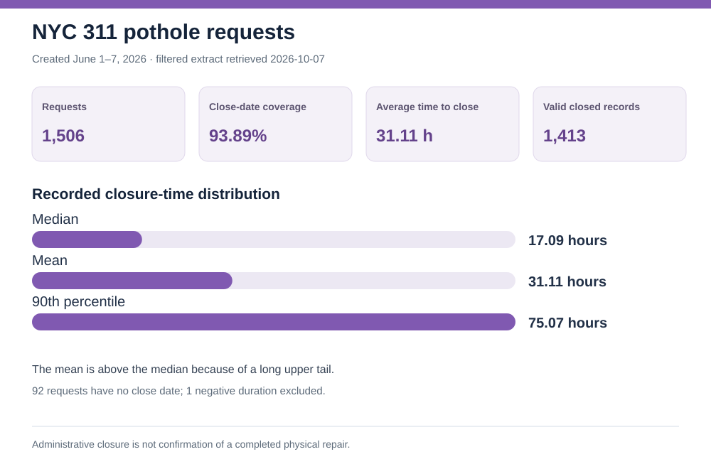

Business question
Which complaint categories create the most work, and which show longer recorded time to close?
Recommendation: Plan rapid-response capacity for high-volume parking and noise reports. Investigate scheduling and handoffs for damaged-tree and sanitation-condition cases, comparing like request types before judging performance.
Highest-volume request types
Recorded median time to close
Calculated only for requests with both timestamps and nonnegative elapsed time.
Different request types have different work requirements and agencies. The longer medians identify where to investigate; they do not prove poor service. Damaged Tree has 83.98% close-date coverage and a 358.05-hour 90th percentile among valid closed cases, so the tail and unresolved cases matter.
Pothole-specific closure times
The filtered descriptor extract contains 1,506 pothole requests from the same creation-date week. Of those, 1,414 have a close date. For the 1,413 valid nonnegative durations, the average was 31.11 hours, median was 17.09 hours, and 90th percentile was 75.07 hours.

This filtered extract was retrieved October 7, 2026. The full-cohort extract was accessed September 28. The source is updated daily, so closed-date values may change between extracts.
Quality checks and limits
All 80,941 request keys in the full-cohort extract are unique. That file has 3,649 missing close dates and 14 records with negative elapsed time; those are excluded from its duration statistics. Open or unresolved cases are not represented in the percentiles, so closure-time comparisons can be biased downward.
The full-cohort file omits descriptor; the separate pothole file was filtered to Street Condition / Pothole and excludes address and precise-location fields. It contains 92 requests without a close date and one negative duration, excluded from its statistics. Closing a 311 ticket is an administrative event, not proof that field work was completed or that the resident was satisfied.
Source: NYC Open Data 311 requests; see the source schema. Full-cohort summary · Pothole summary · Python calculations · Chart builder · SQL checks · Method notes.